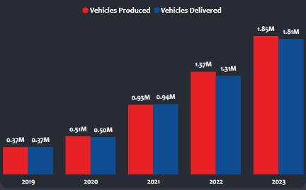
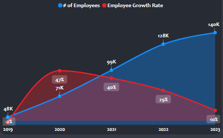
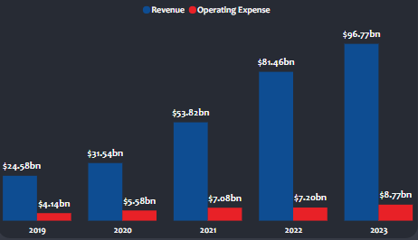
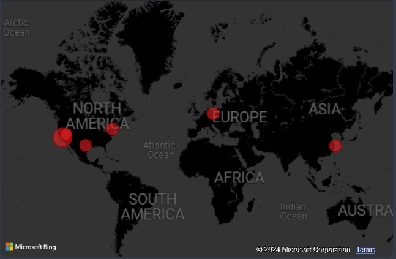

Unveiling E-Learning Dynamics: A Udemy Dashboard Analysis

Introduction:
In an era where digital education is a keystone for growth and innovation, data stands as the beacon guiding the way.
I, Jude Raji, a data analyst with a zeal for educational trends, embarked on a project to unravel the story told by Udemy's wealth of course data.
This was a journey into the heart of online learning, seeking to extract the narratives woven within the numbers of enrollments, revenues, and course popularity.
The mission was to crystallize raw data into strategic insights, illuminating which courses kindled the most curiosity and which formats held learners' attention.
This exploration was more than a study—it was a map to empower one of the largest learning platforms in navigating the tides
of digital education and curating an experience that resonates with learners worldwide.
Problem Statement:
As Udemy's repository of courses grows exponentially, so does the challenge of understanding what drives learner engagement and course profitability.
With a vast array of subjects, formats, and pricing options, identifying the key factors that contribute to a course's success is not only crucial
for content creators but also for the strategic direction of the platform.
This project aimed to tackle the pressing question: what patterns and trends in the data can inform Udemy's approach to maximize both
learner satisfaction and revenue generation in the competitive landscape of online education?
Task:
Complete an Exploratory Data Analysis of Udemy's courses with the following outputs:
- Identify trends in course enrollment and categorize the most popular subjects.
- Assess the correlation between course price, ratings, and enrollment numbers.
- Determine the distribution of course levels (beginner, intermediate, expert) across various subjects.
- Analyze the revenue generation over time to pinpoint peak performance periods.
- Evaluate the impact of course duration on subscriber count and satisfaction.
- Create an extensive dashboard to present to stakeholders.
- Generate a report summarizing the key findings and potential areas for strategic improvement.
Extra Note
One table was provided for this exercise. This table contains 13 fields and 3,676 records:
| Field |
Data Type |
Description |
| course_id |
Integer |
Course ID number |
|
| subject |
String |
Subject group |
| url |
Page URL Link |
String |
| is_paid |
Is course Paid or Free? |
Boolean |
| price |
Integer |
Course price |
| num_subscribers |
Integer |
Number of Subscribers |
| num_reviews |
Integer |
Number of Reviews |
| num_lectures |
Integer |
Number of Lectures |
| level |
String |
Level of Difficulty |
| content_duration |
float |
Duration of content in Hours |
| published_timestamp |
Date and time course was published |
datetime |
The Analytical Approach:
The journey began with root cause analysis (RCA), a methodical approach to uncover the underlying reasons for the variations in donation figures across different regions.
Employing the Five Whys technique, I was able to delve into the data and question each finding to reach the core issues that affect fundraising outcomes.
Data cleaning:
Before diving deep into analysis, the dataset underwent a rigorous cleaning process to ensure the integrity and clarity of the insights. This involved:
- Removing Duplicates: Ensuring no donor was counted more than once.
- Addressing Missing Values: Filling or removing gaps (or null values) in the data where necessary.
- Normalizing Data: Adjusting numerical values for comparability, crucial for analysis.
- Correcting Errors: Amending typos and inaccuracies in state names, job field, and other categorical data.
- Consolidating Data: Merging both (donation and donor) tables while avoiding redundancy.
- Anonymizing Data: Protecting donor privacy by anonymizing personal information where required.
- Pruning Irrelevant Data: Removing non-essential data fields for a focused analysis.
- Sorting and Filtering: Arranging the data for optimal analysis and filtering out the noise.
- Verifying Accuracy: Ensuring the dataset’s reflections of real-world entities post-cleaning.
With a clean and reliable dataset, the stage was set for deeper analysis and visualization.
Key Discoveries and Insights:
A look through Tesla's recent history from 2019 to 2023 reveals some compelling narratives about its growth:
- Vehicle Output: Tesla has impressively rolled out over 5 million vehicles and nearly matched this in deliveries,
painting a picture of a company adeptly meeting its customers’ needs and navigating the logistics of supply and demand.

- Workforce Growth: The Tesla family has grown significantly, boasting a workforce that’s nearly tripled.
After a burst of hiring in 2020, the pace settled, suggesting a shift towards strengthening the existing team
and focusing on sustainable growth.

- Financial Fortitude: On the financial front, Tesla's numbers tell a story of success and savvy.
Revenue spiked, especially striking in 2023 when it hit nearly $97 billion. While there was a small dip in gross profits after 2022,
it seems Tesla's navigating through the ebb and flow of business costs and market trends with a steady hand.
- Revenue Versus Expenses: The gap between revenue and operating costs has widened, with revenue leaping ahead.
It appears Tesla is getting smarter with its spending, investing in growth without letting costs spiral,
a promising sign of a maturing business.

- Geographic Expansion: Tesla's global footprint is expanding, with established bases in the United States, Germany, and China,
and eyes on new locations like Mexico and India. This isn't just about building cars; it's about reaching out to new customers
and planting flags in diverse markets.

Strategic Recommendations:
Based on the findings in this report, here are a few recommendations:
- Sustain Production and Delivery Alignment: Continue to refine production efficiency to match the impressive delivery rates,
ensuring Tesla can meet increasing demand without accumulating excess inventory.
- Strategic Global Expansion: Prioritize expansion into new markets with high growth potential, such as Japan, South Korea,
India and Mexico, to build upon the established success in the United States, Germany, and China.
- Invest in R&D for Sustained Innovation: Allocate a portion of the robust revenue to research and development,
particularly in battery technology and autonomous driving, to maintain Tesla’s competitive edge in innovation.
- Enhance Workforce Development: Focus on talent cultivation and retention to support the increased scale of operations,
ensuring that workforce growth contributes effectively to company goals.
- Refine Pricing and Cost Management: With a healthy financial standing, Tesla should continually assess and adjust its
pricing strategy to remain competitive while also looking for new ways to optimize costs and enhance profitability.
Conclusion:
The report underscores Tesla’s significant growth and strategic expansion, suggesting a strong future both for the company and its investors.
Tesla's trajectory shows potential for continued leadership in the electric vehicle industry, promising for those invested in sustainable
innovation and market transformation.
For a more detailed exploration of the data story, please check out the Dashboard